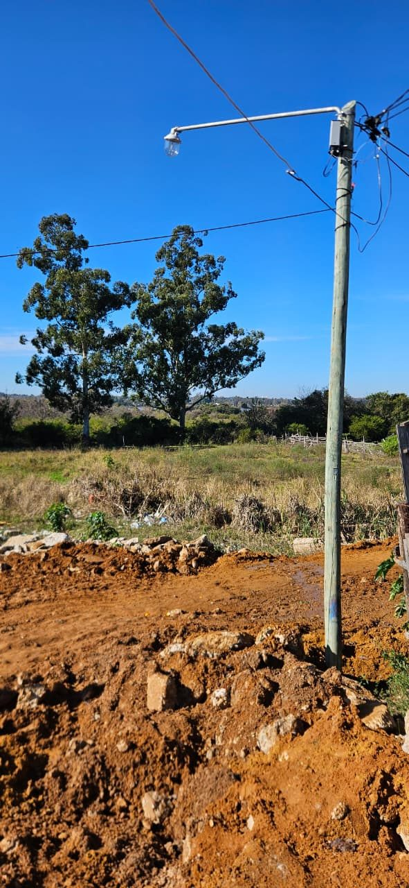
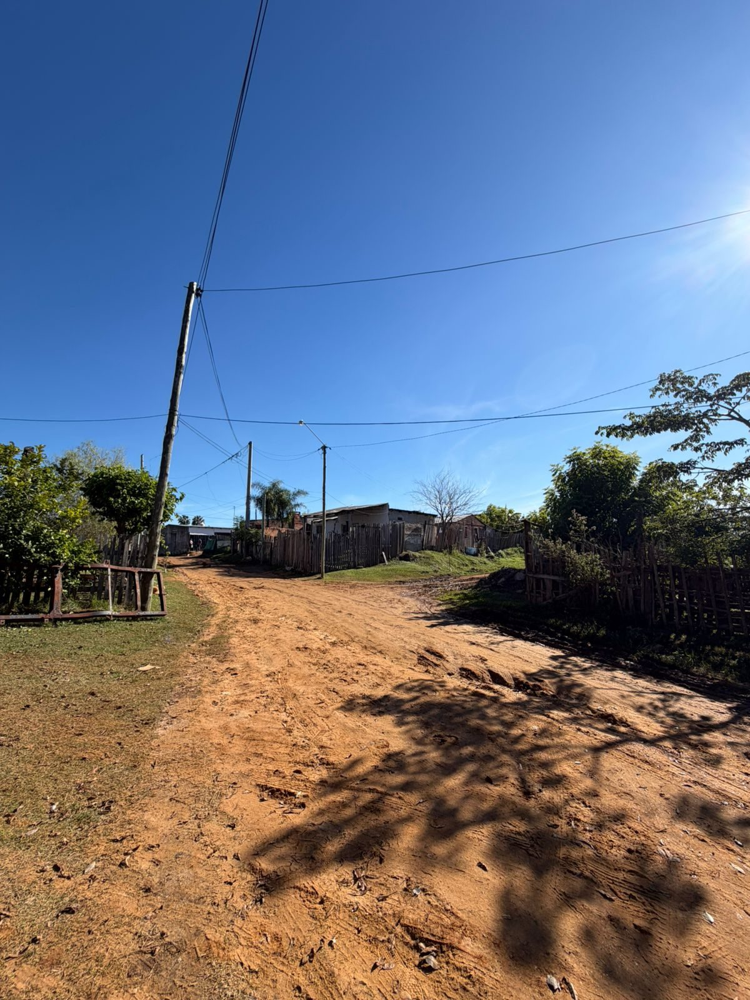
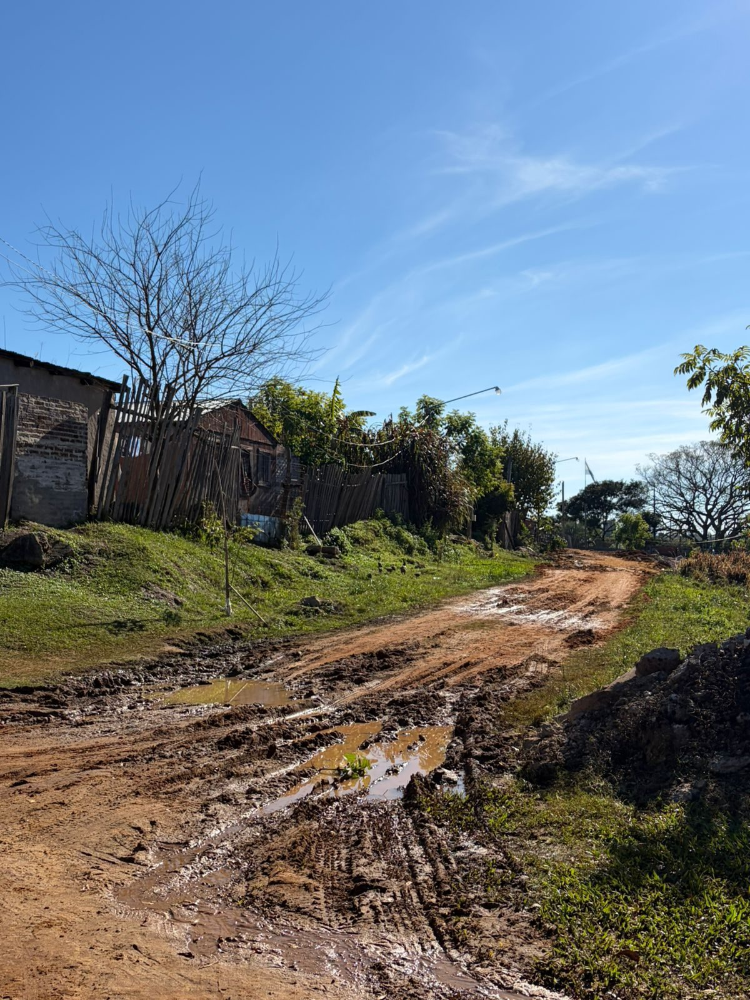
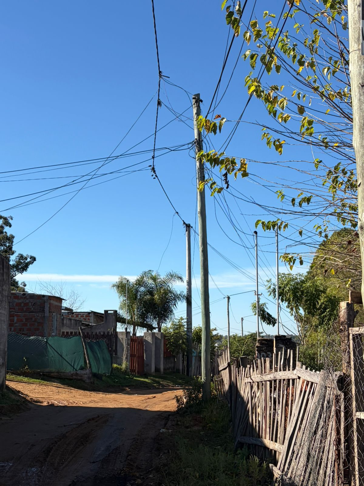
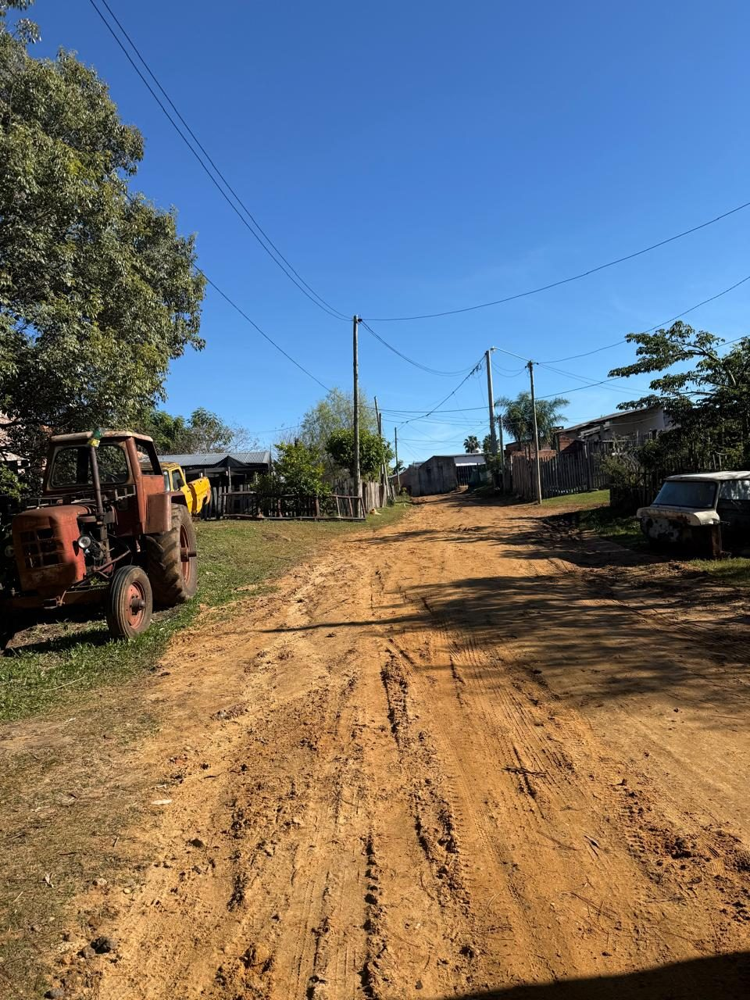
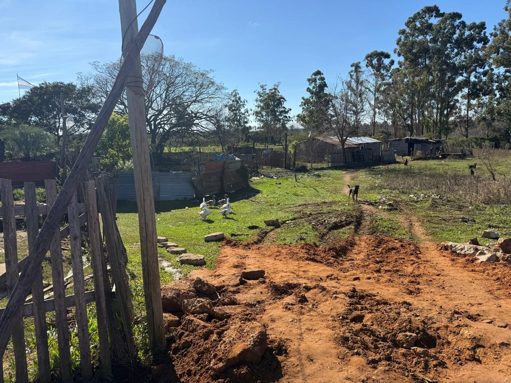

Relevamiento Barrio La Bianca
Cooperativa Eléctrica de Concordia — Unidad de Relevamiento Estratégico
Sector Zona Noreste
Zona
Zona Noreste
El sector relevado, corresponde al perímetro delimitado por las calles San Juan al oeste, al este, es terreno baldío, al norte Antártida Argentina, y al sur Chubut.
Está ubicado en la zona noreste de la ciudad. Cercana al rio Uruguay, aproximadamente 5 cuadras. Y de la playa Los Tomates, que algunos vecinos utilizan para la pesca, utilizando esa ocupación como medio de vida.
Este asentamiento se relaciona con el Barrio La Bianca, tiene sus orígenes en el año 1980, fecha de la inauguración. Con el correr de los años y de distintas administraciones municipales, el barrio quedó conectado al sistema de cloacas. Por lo dicho, quedaron todos esos terrenos, que pertenecían al IAPV sin destino aparente, y fueron comenzando a instalarse muchos comercios, y luego extendiéndose hacia el lado del rio Uruguay habitando en ellos familias.
Se pueden delimitar dos sectores con marcadas diferencias, las viviendas más cercanas a la calle San Juan, en su mayoría son de material, con techos de chapas de zinc, revocadas y con mejoras. Las que están más al límite Este, son de madera, precarias, con techos de chapas asfálticas y sin mejoras.
Las calles se encuentran en muy mal estado. Las condiciones de salubridad son malas, dado que las aguas servidas de baños y cocina corren por ellas. Además de lo mencionado, son intransitables para el tránsito de vehículos comunes. Mas aún de los que pertenecen a empresas de servicios. También se ven en este sector, huertas, y hornos de ladrillos que utilizan los vecinos como medio de vida.
Las líneas eléctricas que recorren las calles Chubut y Antártida Argentina, se realizaron como consecuencia de la solicitud de las flias. residentes. En un principio, Electrotecnia del municipio no lo permitía por ser terrenos provinciales, pero luego de tratativas, se solucionó este aspecto, y se realizaron los tendidos correspondientes. En primer lugar, por calle Chubut, y años mas tarde, de acuerdo a la instalación de nuevos vecinos, por calle Antártida Argentina.
De un total de 60 familias que residen en el lugar, encontramos 37 conexiones activas de electricidad, lo que representa un 60% aproximado. Asimismo, informamos que del 100% de conexiones activas un 69% tiene el subsidio otorgado en la tarifa de electricidad. Y, un 31 % esta con la factura eléctrica sin subsidio.
| Servicio | Estado | Detalle |
|---|---|---|
| Cloacas | Sin servicio | En la zona recorrida no cuentan con red cloacal, por lo que los vecinos utilizan los denominados “pozo ciego” o “pozo negro” para la filtración de aguas residuales. |
| Agua corriente | Disponible | Todas las viviendas poseen agua corriente, a través de mangueras, las cuales se pueden observar en las calles hasta las entradas de sus respectivos hogares. |
| Alumbrado público | Disponible | Se observa alumbrado público en la zona recorrida, sin embargo, nos informan que son de baja intensidad por lo que de noche suele ser bastante oscuro. |
| Transporte Público | Disponible | Los habitantes, utilizan las líneas de colectivos 7 y 9. |
| Recolección residuos | Limitado | Los vecinos nos comentan que acercan los residuos a los contenedores que se ubican en calle San juan y Antártida Argentina, también que usan la quema de basura como método para eliminar dichos residuos. También, algunos vecinos informaron que la entierran. |
| Telefonía celular | Disponible | Se verifico el uso generalizado de teléfonos móviles como medio principal de comunicación. |
| TV | Disponible | |
| Internet | Disponible | En el barrio se identificó la presencia del servicio de internet brindado por la empresa Megacable |
| Educación primaria | Escuela número 69 “Malvinas Argentinas “ |
| Educación secundaria | Escuela número 2 “José Gervasio Artigas” |
| Salud | En cercanías, se encuentra el denominado centro de salud “la Bianca”, dicho establecimiento brinda cobertura de especialidades básicas como ser clínica médica, pediatría, ginecología, obstetricia, etc. además de contar con una ambulancia permanente en caso de urgencias. |
| Otros | Se encuentran la comisaría 6ta y el registro civil para llevar a cabo sus trámites brindando así mayor facilidad a los vecinos para gestionar los mismos, también clubes como el club social y deportivo “la Bianca” y plazoletas y plazas para uso recreativo del barrio. El barrio La Bianca posee cajero automático. Esto les beneficia, por la cercanía. |
Con referencia a la situación económica de los vecinos, el promedio de ingresos que se informa en los gráficos que adjuntamos al final de este informe, nos da un importe bajo, de $446.000. El motivo del número, es porque hubo algunos grupos familiares entrevistados, (caso de empleados municipales y docentes, con ingresos estables, pero que no quisieron detallar el monto. Tampoco informaron un promedio los pescadores.
Está construido sobre terrenos, que originalmente estaban destinados a las piletas de decantación de efluentes del complejo habitacional barrio 708 viviendas. Esto tiene sus orígenes en el año 1980, fecha de la inauguración.
En la zona recorrida, podemos observan pocos kioscos instalados en las viviendas. Pero, como está lindero al barrio La Bianca, concurren al mismo porque tienen la oferta de todo tipo de comercios.





